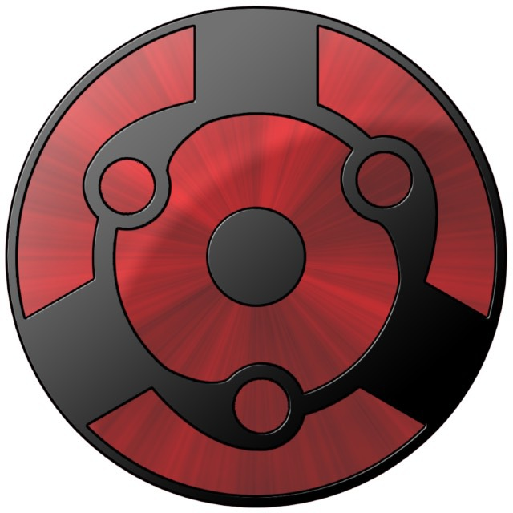
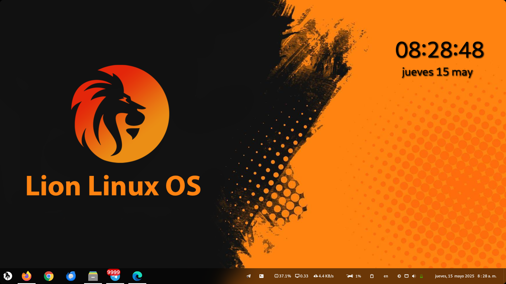

Flariox
Potente. Elegante. Libre.
Una distribución Linux moderna diseñada para ofrecer rendimiento, estabilidad y una experiencia de usuario excepcional.
Acerca de Flariox
Flariox es una distribución Linux basada en Arch Linux que combina potencia y elegancia. Diseñada tanto para principiantes como para usuarios avanzados, ofrece un entorno estable y personalizable con un enfoque en la experiencia de usuario.
Rápido
Optimizado para un rendimiento excepcional incluso en hardware modesto.
Seguro
Actualizaciones de seguridad regulares y protección integrada.
Libre
Software de código abierto que respeta tu libertad.
Características Principales
Descubre lo que hace especial a FlarioX
Entorno de Escritorio
Cinnamon personalizado con extensiones útiles y un diseño limpio y moderno.
Software Preinstalado
Todas las aplicaciones esenciales para productividad, multimedia y desarrollo.
Actualizaciones
Soporte a largo plazo con actualizaciones regulares de software y seguridad.
Personalización
Temas, iconos y ajustes para adaptar el sistema a tu estilo.
Compatibilidad
Soporte para una amplia gama de hardware y controladores.
Soporte
Comunidad activa y documentación detallada para ayudarte.
Nuestro Equipo
Conoce a las personas detrás de Flariox
🇻🇪 Leonardo Gilberto Muñoz
Líder del Proyecto
Desarrollador principal con más de 10 años de experiencia en sistemas Linux y desarrollo de software.
🇨🇺 Edisbel Ramirez Lovatos
Desarrollador, Diseñador UX/UI
Especialista en experiencia de usuario e interfaces, encargada de hacer que Flariox sea intuitivo y hermoso.

🇵🇷 Kenneth Medina
Desarrollador
Experto en optimización de sistemas y gestión de paquetes, asegurando que Flariox funcione perfectamente.
🇨🇴 Williams Alfredo Fandiño Gómez
Desarrollador
Especialista en experiencia de usuario e interfaces. Actualmente, él se encarga de la documentación del proyecto.
🇦🇷 Uriel Medich
Experto en Ciberseguridad
Especialista en Ciberseguridad, se encarga de la corrección de vulnerabilidades de Flariox
Descargar Flariox
Elige la versión adecuada para ti
Requisitos del sistema
- Procesador: 64-bit de 2 GHz o superior
- RAM: 2 GB mínimo (4 GB recomendado)
- Almacenamiento: 25 GB de espacio libre
- Pantalla: 1024×768 resolución mínima
Capturas de Pantalla
Echa un vistazo a Flariox en acción

Escritorio principal
Menú de aplicaciones
Terminal personalizada
Centro de control
Modo oscuro
Espacios de trabajo
Únete a Nuestra Comunidad
Conecta con otros usuarios y contribuidores